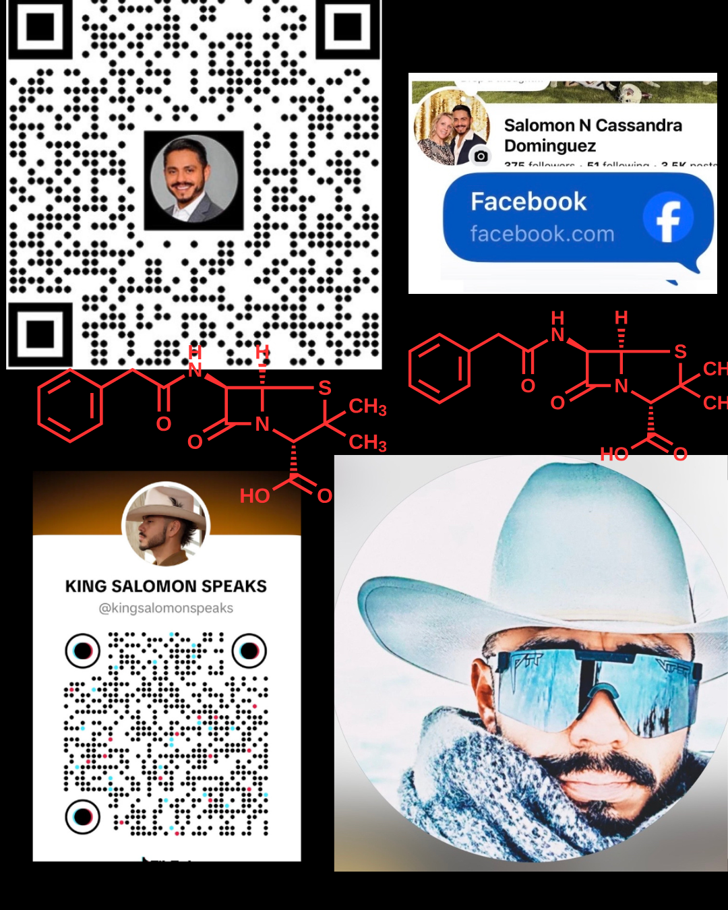

SARDONYXX™
The Origin
Before the code — he was.
This is not a startup story. This is a life story. Not the curated version. Not the perfect LinkedIn version. The real one — because everything online looks so perfect it makes real people feel like they have nothing together.
The family moved constantly. Senatobia, Mississippi. St. James, Minnesota. Madelia, South Dakota. Always moving. Always surviving.
"This is a computer. It's connected to the World Wide Web. And it will change the world." — A librarian in Madelia, Minnesota.
The little boy believed it. He never forgot it. He carried that moment for thirty years — until he built something with it.
Colonia Muñiz
Dropout Rate
Degrees
Below Poverty
Salomon grew up inside these statistics. He carried water in buckets. He lived in a house with no windows and no doors. He was one of those children — invisible to most of America, reduced to a percentage.
The child who carried water buckets grew up to build a bilingual safety platform so that workers like his parents would have access to the information they need to go home alive. Not because it makes a good story. Because it was the only thing that made sense.
Sardonyx is the birthstone of September 23rd — Salomon's birthday. In the Hebrew calendar, onyx is the stone of the tribe of Joseph and Ephraim. His birthday fell on Rosh Hashanah 5786 — the Hebrew New Year.
GML.3S™ — FOUNDATION. BUILT ON STONE.
The Designer's Journal
Where ancient numbers meet fluid patterns. The raw strategy before the runway.
Designing the layers of Judah, Ephraim, and Joseph.
The Live Portfolio
Front Row Sicily. Street Truth. The Season in Motion.

The Season in Motion.